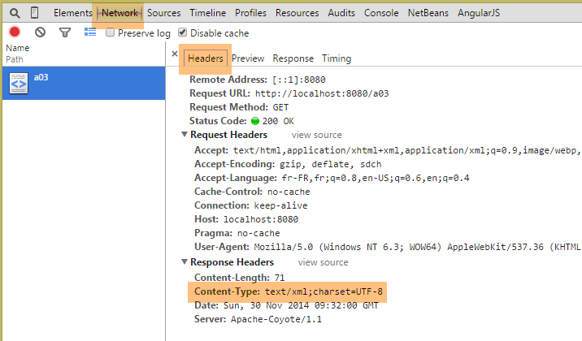
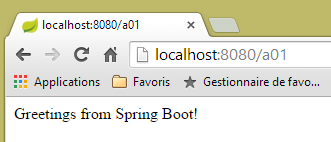
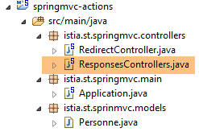

3. Actions : la réponse
Considérons l'architecture d'une application Spring MVC :
 |
Dans ce chapitre, nous regardons le processus qui amène la requête [1] au contrôleur et à l'action [2a] qui vont la traiter, un mécanisme qu'on appelle le routage. Nous présentons par ailleurs les différentes réponses [3] que peut faire une action au navigateur. Ce peut être autre chose qu'une vue V [4b].
3.1. Le nouveau projet
Nous créons un nouveau projet Spring MVC :
 |
- en [1-2], nous créons un nouveau projet basé sur Spring Boot ;
 |
- en [3], le nom du projet Maven ;
- en [4], le groupe Maven dans lequel sera placé le résultat de la compilation du projet ;
- en [5], le nom donné au produit de la compilation ;
- en [6], une description du projet ;
- en [7], le package dans lequel sera placée la classe exécutable du projet ;
- en [8], la nature du projet. C'est un projet web avec des vues Thymeleaf. On voit ici, toutes les dépendances Maven prêtes à l'emploi offertes par le projet Spring Boot ;
- en [9], on indique que le produit issu du build Maven sera packagé dans une archive jar et non war. Le projet va alors utiliser un serveur Tomcat embarqué qui se trouvera dans ses dépendances ;
- en [10], on passe à la suite de l'assistant ;
- en [11], on indique le dossier du projet ;
 |
- en [12], le projet généré ;
- en [14-15], on renomme le package [istia.st.springmvc] ;
 |
- en [16], le nouveau nom du package ;
- en [17], le nouveau projet ;
Nous créons maintenant une nouvelle classe ;
 |
- en [1-3], nous créons une nouvelle classe ;
 |
- en [5] nous lui donnons et en [4] nous précisons son package ;
- en [6] le nouveau projet ;
La classe est pour l'instant la suivante :
package istia.st.springmvc;
public class ActionsController {
}
Nous faisons évoluer ce code de la façon suivante :
package istia.st.springmvc;
import org.springframework.web.bind.annotation.RestController;
@RestController
public class ActionsController {
}
- ligne 6 : l'annotation [@RestController] indique deux choses :
- que la classe [ActionsController] ainsi annotée est un contrôleur Spring MVC, donc contient des actions qui traitent des URL de clients ;
- que le résultat de ces actions est envoyé au client ;
L'autre annotation [@Controller] que nous avons rencontrée est différente : les actions d'un contrôleur ainsi annoté rendent le nom de la vue qui doit être affichée. C'est alors la combinaison de cette vue et du modèle construit par l'action pour cette vue qui fournit la réponse envoyée au client.
Le changement de structure de notre projet entraîne un changement de configuration de notre projet :
 |
La classe [Application] évolue de la façon suivante :
package istia.st.springmvc.main;
import org.springframework.boot.SpringApplication;
import org.springframework.boot.autoconfigure.EnableAutoConfiguration;
import org.springframework.context.annotation.ComponentScan;
import org.springframework.context.annotation.Configuration;
@Configuration
@ComponentScan({"istia.st.springmvc.controllers"})
@EnableAutoConfiguration
public class Application {
public static void main(String[] args) {
SpringApplication.run(Application.class, args);
}
}
- ligne 9 : l'annotation [ComponentScan] admet comme paramètre un tableau de noms de packages où Spring Boot doit chercher des composants Spring. Ici nous mettons dans ce tableau le package [istia.st.springmvc.controllers] afin que le contrôleur annoté par [@RestController] soit trouvé ;
Nous allons construire diverses actions dans le contrôleur pour illustrer leurs principales caractéristiques. Nous allons tout d'abord nous intéresser aux divers types de réponses possibles d'une action dans une application sans vues.
3.2. [/a01, /a02] - Hello world
Notre première action sera la suivante :
@RestController
public class ActionsController {
// ----------------------- hello world ------------------------
@RequestMapping(value = "/a01", method = RequestMethod.GET)
public String a01() {
return "Greetings from Spring Boot!";
}
}
- ligne 4 : l'annotation [RequestMapping] qualifie la requête traitée par l'action annotée :
- l'attribut [value] est l'URL traitée,
- l'attribut [method] fixe la méthode acceptée ;
Ainsi la méthode [a01] traite la requête HTTP [GET /a01].
- ligne 5 : la méthode [a01] rend un type [String] qui sera envoyé tel quel au client ;
- ligne 6 : la chaîne retournée ;
Lançons l'application comme nous l'avons fait déjà plusieurs fois puis avec le client [Advanced Rest Client], nous demandons l'URL [/a01] avec un GET [1-2] :
 |
- en [3], la réponse du serveur ;
- en [4], les entêtes HTTP de la réponse. On voit que l'encodage utilisé est [ISO-8859-1]. On peut préférer l'encodage UTF-8. Cela peut se configurer ;
- en [5], on demande la même URL avec le navigateur Chrome ;
Nous ajoutons l'action [/a02] suivante dans le contrôleur [ActionsController] (on confondra ainsi parfois l'URL et la méthode qui la traite sous le nom d'action) :
// ----------------------- caractères accentués - UTF8 ------------------------
@RequestMapping(value = "/a02", method = RequestMethod.GET, produces="text/plain;charset=UTF-8")
public String a02() {
return "caractères accentués : éèàôûî";
}
- ligne 2 : l'attribut [produces="text/plain;charset=UTF-8"] indique que l'action envoie un flux texte avec des caractères encodés au format [UTF-8]. Ce format permet notamment l'utilisation des caractères accentués ;
Pour prendre en compte cette nouvelle action, nous devons relancer l'application :
 |
Le résultat est le suivant :
 |
- en [1], on voit la nature du document envoyé par le serveur ;
- en [2-3], on a bien les caractères accentués ;
3.3. [/a03] : rendre un flux XML
Nous ajoutons l'action [/a03] suivante :
// ----------------------- text/xml ------------------------
@RequestMapping(value = "/a03", method = RequestMethod.GET, produces = "text/xml;charset=UTF-8")
public String a03() {
String greeting = "<greetings><greeting>Greetings from Spring Boot!</greeting></greetings>";
return greeting;
}
- ligne 2 : l'attribut [produces="text/xml;charset=UTF-8"] indique que l'action envoie un flux XML avec des caractères encodés au format [UTF-8] ;
Son exécution donne la chose suivante :
 |
- en [1], l'entête HTTP précise que le document envoyé est du HTML ;
- en [2], le navigateur Chrome utilise cette information pour formater le texte XML reçu ;
Rappelons qu'avec Chrome, on a accès aux échanges HTTP entre le client et le serveur dans la fenêtre de développement (Ctrl-Maj-I) :

Dorénavant, on ne fera pas systématiquement des copies d'écran des échanges HTTP entre le client et le serveur. Parfois, on se contentera d'indiquer le texte de ces échanges.
3.4. [/a04, /a05] : rendre un flux jSON
Nous ajoutons l'action [/a04] suivante :
// ----------------------- produire du jSON ------------------------
@RequestMapping(value = "/a04", method = RequestMethod.GET)
public Map<String, Object> a04() {
Map<String, Object> map = new HashMap<String, Object>();
map.put("1", "un");
map.put("2", new int[] { 4, 5 });
return map;
}
- ligne 3 : l'action rend un type [Map], un dictionnaire. On se rappelle qu'avec un contrôleur de type [@RestController], le résultat de l'action est la réponse envoyée au client. Le protocole HTTP étant un protocole d'échanges de lignes de texte, la réponse du client doit être sérialisée en une chaîne de caractères. Pour cela, Spring MVC utilise divers convertisseurs [Objet <---> chaîne de caractères]. L'association d'un objet particulier avec un convertisseur se fait par configuration. Ici l'autoconfiguration de Spring Boot va inspecter les dépendances du projet :
 |
Les dépendances Jackson ci-dessus sont des bibliothèques de sérialisation / désérialisation d'objets en chaînes jSON. Spring Boot va alors utiliser ces bibliothèques pour sérialiser / désérialiser les objets rendus par les actions. On trouvera un exemple de code Java pour sérialiser / désérialiser des objets Java en jSON au paragraphe 9.7.
On notera en ligne 2 que nous n'avons pas mis le type de la réponse envoyée. Nous allons voir le type par défaut qui va être envoyé.
Les résultats sont les suivants dans Chrome [1-3] :
 |
Nos ajoutons maintenant l'action [/a05] suivante :
// ----------------------- produire du jSON - 2 ------------------------
@RequestMapping(value = "/a05", method = RequestMethod.GET)
public Personne a05() {
return new Personne(1,"carole",45);
}
La classe [Personne] est la suivante :
 |
package istia.st.sprinmvc.models;
public class Personne {
// identifiant
private Integer id;
// nom
private String nom;
// âge
private int age;
// constructeurs
public Personne() {
}
public Personne(String nom, int age) {
this.nom = nom;
this.age = age;
}
public Personne(Integer id, String nom, int age) {
this(nom, age);
this.id = id;
}
@Override
public String toString() {
return String.format("[id=%s, nom=%s, age=%d]", id, nom, age);
}
// getters et setters
...
}
L'exécution donne les résultats suivants :
 |
- en [1], le serveur indique que le document qu'il envoie est du jSON ;
- en [2], le document jSON reçu ;
3.5. [/a06] : rendre un flux vide
Nous ajoutons l'action [/a06] suivante :
// ----------------------- rendre un flux vide ------------------------
@RequestMapping(value = "/a06")
public void a06() {
}
- ligne 3, l'action [/a06] ne rend rien. Spring MVC va alors générer une réponse vide au client ;
L'exécution donne les résultats suivants :
 |
Ci-dessus, l'attribut HTTP [Content-Length] dans la réponse indique que le serveur envoie un document vide.
3.6. [/a07, /a08, /a09] : nature du flux avec [Content-Type]
Nous ajoutons l'action [/a07] suivante :
// ----------------------- text/html ------------------------
@RequestMapping(value = "/a07", method = RequestMethod.GET, produces = "text/html;charset=UTF-8")
public String a07() {
String greeting = "<h1>Greetings from Spring Boot!</h1>";
return greeting;
}
- ligne 2, l'action [/a07] rend un flux HTML [text/html] ;
- ligne 4 : une chaîne HTML ;
L'exécution donne les résultats suivants :
 |
- en [1], on voit que Chrome a interprété la balise HTML <h1> qui affiche en gros caractères son contenu ;
Maintenant faisons la même chose avec l'action [/a08] suivante :
// ----------------------- résultat HTML en text/plain ------------------------
@RequestMapping(value = "/a08", method = RequestMethod.GET, produces = "text/plain;charset=UTF-8")
public String a08() {
String greeting = "<h1>Greetings from Spring Boot!</h1>";
return greeting;
}
- ligne 2 : la réponse de l'action est de type [text/plain] ;
Les résultats sont les suivants :
 |
- en [1], Chrome n'a pas interprété la balise HTML <h1> parce que le serveur lui a dit qu'il lui envoyait un flux [text/plain] [2] ;
Recommençons quelque chose d'analogue avec l'action [/a09] suivante :
// ----------------------- résultat HTML en text/xml ------------------------
@RequestMapping(value = "/a09", method = RequestMethod.GET, produces = "text/xml;charset=UTF-8")
public String a09() {
String greeting = "<h1>Greetings from Spring Boot!</h1>";
return greeting;
}
- ligne 2 : on envoie un flux de type [text/xml] ;
Les résultats sont les suivants :
 |
- en [1], Chrome n'a pas interprété la balise HTML <h1> parce que le serveur lui a dit qu'il lui envoyait un flux [text/xml] [2]. Il a alors géré la balise <h1> comme une balise XML ;
On retiendra de ces exemples l'importance de l'entête HTTP [Content-Type] dans la réponse du serveur. Le navigateur utilise cet entête pour savoir comment interpréter le document qu'il reçoit ;
3.7. [/a10, /a11, /a12] : rediriger le client
Nous créons un nouveau contrôleur [RedirectController] :
 |
Le code de [RedirectCntroller] sera pour l'instant le suivant :
package istia.st.springmvc.controllers;
import org.springframework.stereotype.Controller;
import org.springframework.web.bind.annotation.RequestMapping;
import org.springframework.web.bind.annotation.RequestMethod;
@Controller
public class RedirectController {
}
- ligne 7 : on utilise l'annotation [@Controller] ce qui fait que désormais par défaut le type [String] du résultat des actions désigne le nom d'une action ou d'une vue ;
Nous créons l'action [/a10] suivante :
// ------------ pont vers une action tierce -----------------------
@RequestMapping(value = "/a10", method = RequestMethod.GET)
public String a10() {
return "a01";
}
- ligne 4 : on rend comme résultat 'a01' qui est le nom d'une action. Ce sera alors elle qui va envoyer la réponse au client ;
Voici un exemple :
 |
- en [2], on a reçu le flux de l'action [/a01] ;
- en [3], le navigateur affiche l'URL de l'action [/a10] ;
Nous créons maintenant l'action [/a11] suivante :
// ------------ redirection temporaire 302 vers une action tierce -----------------------
@RequestMapping(value = "/a11", method = RequestMethod.GET)
public String a11() {
return "redirect:/a01";
}
Nous obtenons les résultats suivants :
 |
- dans les logs de Chrome [1-2], on voit deux requêtes, l'une vers [/a11], l'autre vers [/a01] ;
- en [3], le serveur répond avec un code [302] qui demande au navigateur client de se rediriger vers l'URL indiquée par l'entête HTTP [Location:] [4]. Le code [302] est un code de redirection temporaire ;
Le navigateur fait alors la deuxième requête vers l'URL de redirection :
 |
- en [5], la seconde requête du client ;
- en [6], le navigateur client affiche l'URL de la requête de direction ;
On peut vouloir indiquer une redirection permanente, auquel cas, il faut envoyer au client l'entête HTTP suivant :
qui veut dire que la redirection est permanente. Cette différence entre redirection temporaire (302) et permanente (301) est prise en compte par certains moteurs de recherche.
Nous écrivons l'action [/a12] qui va opérer cette redirection permanente :
// ------------ redirection permanente 301 vers une action tierce----------------
@RequestMapping(value = "/a12", method = RequestMethod.GET)
public void a12(HttpServletResponse response) {
response.setStatus(301);
response.addHeader("Location", "/a01");
}
- ligne 3 : on demande à Spring MVC d'injecter l'objet [HttpServletResponse] qui encapsule la réponse envoyée au client ;
- ligne 4 : on fixe le [status] de la réponse, le [301] de l'entête HTTP :
- ligne 5 : on crée à la main l'entête HTTP suivant :
qui est l'URL de redirection.
L'exécution donne les résultats suivants :
 |  |
On retiendra de cet exemple la façon de :
- générer le statut de la réponse HTTP ;
- d'inclure un entête HTTP dans la réponse ;
3.8. [/a13] : générer la réponse complète
Il est possible de maîtriser totalement la réponse comme le montre l'action suivante de la classe [ResponsesController] :
 |
// ----------------------- génération complète de la réponse ------------------------
@RequestMapping(value = "/a13")
public void a13(HttpServletResponse response) throws IOException {
response.setStatus(666);
response.addHeader("header1", "qq chose");
response.addHeader("Content-Type", "text/html;charset=UTF-8");
String greeting = "<h1>Greetings from Spring Boot!</h1>";
response.getWriter().write(greeting);
}
- ligne 3 : le résultat de l'action est [void]. Dans ce cas, pour envoyer une réponse non vide au client, il faut utiliser l'objet [HttpServletResponse response] fourni par Spring MVC ;
- ligne 4 : on donne à la réponse un statut qui sera non reconnu par le client ;
- ligne 5 : on ajoute un entête HTTP qui sera non reconnu par le client ;
- ligne 6 : on ajoute un entête HTTP [Content-Type] pour préciser le type de flux qu'on va envoyer, ici du HTML ;
- lignes 7-8 : le document qui va suivre les entêtes HTTP dans la réponse ;
Les résultats sont les suivants :
 |
- en [1], on reconnaît les éléments de notre réponse ;
- en [2-3], on voit que Chrome a ignoré le fait que :
- le statut HTTP de la réponse n'était pas un statut HTTP reconnu,
- que l'entête [header1] n'était pas un entête HTTP reconnu ;
Si le client n'est pas un navigateur mais un client programmé, on est libre d'utiliser les statuts et les entêtes que l'on veut.